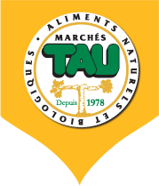
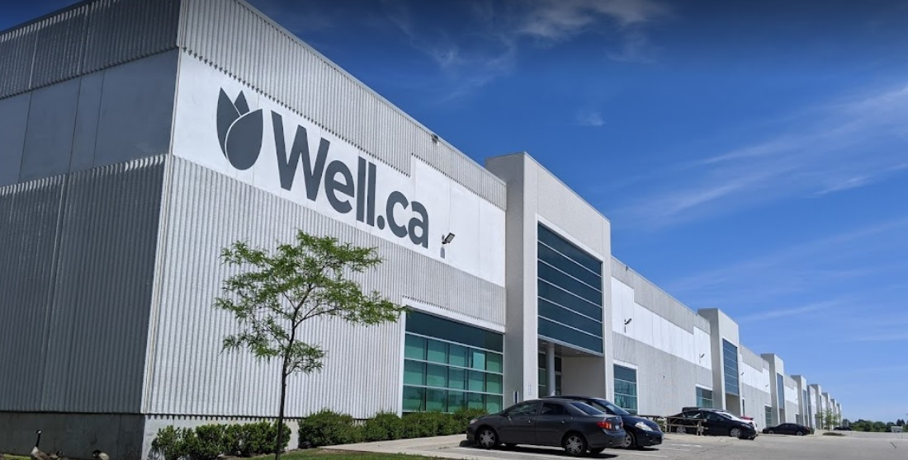
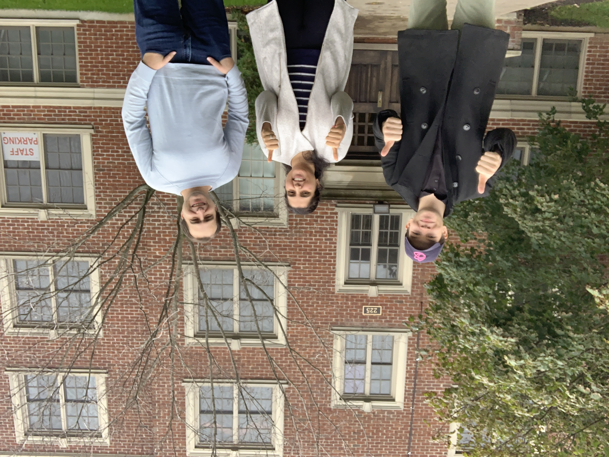
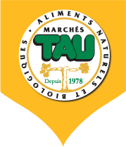
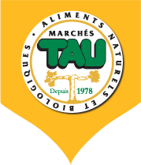

From May 2021 to December 2021, I had the opportunity to
work at Tulip remotely.
Specifically, I worked on the
Tulip Grocery
and Well.ca team. Throughout
these 8 months, I learned a lot about high-traffic,
large-scale code and infrastructure. I developed many large
and complex features during my time there. This includes the
French localization of
Well.ca, new Well.ca
Multiplex Gift Wrap flow, loyalty partner integration
(DataCandy), CMS system overhaul, and much more. I was also
able to physically visit the Well.ca fulfillment and
distribution centre in Guelph.
About Tulip
Tulip is now a company of many products and solutions
targeting international fashion giants. A small list of
their clients include Chanel, Tory Burch, Boggi Milano,
Missoni, Mulberry, and more. Based in Kitchener, Ontario and
now WFH-first, it is expanding rapidly and growing it's pool
of talent.
At a high-level, Tulip is a SaaS company. They provide a
custom POS and clienteling solution to such fashion
companies on a subscription-based monetization model.
One of Tulip's lesser known products is their e-commerce and
Grocery platform. The largest client on the e-commerce
platform is Well.ca. Well.ca is a retailer based in Guelph
that sells health, beauty, baby, home, and green and natural
products. The majority of my work was on Well.ca.
The Tulip Grocery platform is the newer version of the
monolithic e-commerce platform that runs Well.ca. The
platform provides an end-to-end grocer solution including
e-commerce (frontend), e-commerce management (backend),
intelligent Multiplex fulfillment and distribution system,
purchase order system, and more.

Job Description
Throughout my 8-months at Tulip, I had the opportunity to
work on so many features that I cannot possibly list all of
them. I made a total of 303 merge-requests (MRs,
equivalent to GitHub pull-requests or PRs); these
contributions consisted of small and large features across
10+ repositories. On average, this is 2 contributions
per-day; although, on some days I would contribute 30+
times. The tech-stack included PHP (CodeIgniter),
JavaScript, ExtJS, MySQL, Apache Solr, beanstalkd.
Additionally, I worked directly with business stakeholders
and external vendors allowing ideas to flow freely.
Below, I list some significant changes that benefitted me as
a developer, further expanding my skill set.
Daily Standup
On a daily cadence, our team would meet virtually at 10:00am
to hold a scrum/standup. Here, each team member would
discuss three points of information:
What we worked on the work-day prior
What we are going to work on today
What, if anything, is blocking our work?
In order to organize my work and thoughts prior to our
standup, I used an app called
Notion. In Notion, I
utilized the Kanban-style board feature. For each task, I
would create a card and sort it Trello-style with columns
such as Todo, Blocked, Working on, Ready for Deployment, and
Complete. This way, I can keep track of work that needs to
be done and work completed. If I get stuck on something, it
goes to the Blocked column. This proved to be largely
beneficial to my morning standup fluency and transparency. I
also added a flag on each card to indicate which project it
was related to.
Notion Kanban board created by me
Well.ca French Localization
During my time at Tulip, I have had the opportunity to work
on a plethora of interesting and challenging problems. One
highlight of my work term has been developing the French
localized website for one of our clients, Well.ca. Although
I wasn't the only developer at the wheel, I had a large role
in integrating an internationalization SaaS, Smartling,
which would eventually become the source of French content.
Since Well.ca contains millions of translatable content, a
typical translation workflow would not be feasible. The fact
that the content on Well.ca updates at a high frequency
increased the complexity of this project. I utilized
Smartling's Machine Translation software to receive
on-the-fly translations as content is uploaded or modified.
Using event listeners coupled with a job dispatcher, I was
able to orchestrate the translation of thousands of strings
within a few minutes. To ingest the completed translations,
I had to develop a webhook that listens for a status update
from Smartling. This saved the Well.ca team thousands of
work hours and will continue to do so for the foreseeable
future.
Well.ca Distribution Centre Visit
Working at Tulip continuously heightened my passion for
exploring and learning about new tech. When I heard that my
manager was going on a trip to the Well.ca fulfillment and
distribution centre in Guelph, I was eager to join them.
Since my position is remote, I was also interested in
meeting the person I report to every day. I jokingly said,
“you should stop by and say hello!” This led to a generous
invitation to visit them at the warehouse. I was thrilled!
During my visit, I learned more about the physical
fulfillment process and the coordination behind the scenes.
I was able to see the code that I wrote being used by
hundreds of people.
Having the power to make day-to-day operations easier or
more intuitive is a great feeling - seeing this in action
makes those feelings come to life. I am extremely grateful
to my team and Well.ca for allowing me to have the
opportunity.

Well.ca Warehouse in Guelph, ON

Me, our PM, and my manager.
Tulip Grocery Partner - Marches TAU
I also had the opportunity to work on the new grocery
e-commerce partnership with a grocer based in Quebec,
Marches TAU. I developed several major features, such as
their loyalty program (Paystone DataCandy) integration,
dynamic landing page improvements which improve SEO,
scheduled store flyer system using FlowPaper, physical
POS-to-website live inventory and order synchronization,
ease-of-use backend utilities for staff to upload content in
bulk, and many frontend UI mockup integrations.
This was an interesting project to work on as it was brand
new and the client is relatively small. This gave us as
developers more creative freedom to experiment with new
backlogged features. We also had loose deadlines as the site
has not been released, giving us more time to test and
validate.
Hackday
Once every quarter, Tulip holds a hackathon called Hackday.
All employees are encouraged to step away from day-to-day
work and work on something of their interest (bonus if the
project is eventually integrated into the eco-system).
In my first Hackday (Q3), I teamed up with two other co-op
students from UofG and we visited the Arboretum. There, we
cleaned up lots of garbage and litter, totaling over 10
extra-large garbage bags. It was a great opportunity to meet
my colleagues when working remotely.
On my second Hackday (Q4), I worked with someone from my
core team named Chris C. Me and Chris are both interested in
IoT devices, and share a common problem: washroom
availability. I came up with an idea to somehow monitor the
status of washrooms in our own home, while preserving
privacy. Think airplane lavatory. Chris decided that the
name should be "Washroom Whistle". We started with a WiFi-enabled magnetic door security
alarm. Using this, we interfaced with the Tuya (brand)
private API to wait for door status updates. We made a
Dockerized web-app composed of React for the frontend, and
NodeJS, ExpressJS, and MongoDB for the backend. The frontend
would poll our Node backend API in order to inform the user
of whether the washroom was free or not. Since we were
limited to 6-7 hours of development time, we weren't able to
complete every feature we had planned such as metrics, a
React Native app, web-sockets, etc.
Ian Pavlinic Memorial Award for Innovation
While not a workplace contribution, I feel that I should
mention my nomination for the Ian Pavlinic Memorial Award
for Innovation, Co-op Student of the Year.
In November, my manager brought up a University of Guelph
Co-op award, the Ian Pavlinic Memorial Award. He generously
offered to nominate me, to which I had an easy answer.
Throughout the next 3 days, I spent many hours working on
and revising my personal statement. I worked alongside my
manager as he also had to write an employer statement.
I am currently awaiting the results of the award. Winning
this award would be incredibly beneficial to my career by
possibly opening up many more job opportunities.
Goals and Outcomes
Work Term 1 (S21) Learning Goals
Personal Goal: I would like to work on a
project/product with a modern tech-stack. I've had
previous experience working with legacy PHP code and
would like to devote some time during my term to
improving my knowledge of modern frontend and backend
frameworks.
Goal Reflection: I was able to work on a
recently released Tulip product titled
Fulfillment. It used a modern version of the
CodeIgniter PHP framework. I was able to learn
more about this technology worked whether
frontend or backend.
Personal Goal: I would like to learn more about
DevOps, including CI/CD. I've always been interested in
this subset of the industry and would enjoy the
opportunity to learn more about it. Learning more about
Kubernetes/horizontal-scaling as well as cloud
infrastructure would be a plus.
Goal Reflection: The Tulip Fulfillment
product used modern CI/CD techniques utilizing
GitLab's Pipeline and Job features. I only
skimmed the surface, but was able to see how it
worked and how it would run tests on each MR
automatically.
Teamwork Goal: I would like to get better at
context-switching within a team. Some tasks require
collaborative group-effort, and others require only
individual work. Switching between these types of tasks
is difficult as you cannot rely on your teammates when
working individually.
Goal Reflection: I felt like I massively
improved this skill during this term. Since I
was working on two major projects (and being
pulled between the two), I was forced to respond
to whatever was more urgent. This required
completely switching my local working
environment. I also had to learn to pause any
on-going work if I were to switch. I utilized
the "git stash" feature heavily.
Work Term 2 (F21) Learning Goals
Personal Goal: I would like to help new employees
on the team onboard with our development toolset by the
end of my work-term. I believe this will help me better
understand the setup process and ways to improve it.
Doing so will also benefit my communication and
leadership skills
Goal Reflection: While I wasn't directly
assigned to on-board a new employee, I certainly
helped on multiple occasions. Specifically, when
a new employee was stuck on an issue that I had
encountered in the past, I would offer my help
and conduct a video conference to troubleshoot
and fix the problem.
Personal Goal: By the end of my work-term, I
would like to learn enough about CI/CD such that I can
be a support in using this solution for the release of a
project. Our most likely project to launch (before the
end of my term) is a good candidate.
Goal Reflection: I wasn't able to action
this goal as the mentioned project did not
launch on time. It is set to launch early
January and I am excited to see all of my work
live!
Personal Goal: I would love to participate in the
company Hackday (in December) and build or experiment
with a new (to me) technology. It would be a bonus if my
project idea contributed to a real feature in the Tulip
eco-system.
Goal Reflection: I completed this goal
beyond my own expectations and am very happy
about it. Read more about it
here
Conclusion
All-in-all, these two work terms completely blew my
expectations. Considering it was my first co-op experience,
I was nervous and rudely struck by imposter-syndrome. The
Tulip team welcomed me with open arms, even stopping their
work to help me when I was stuck. I felt just as much a part
of the team as my full-time co-workers.
Considering I was well-versed in the Tulip tech stack prior
to joining, I was worried whether or not I would benefit
technically from this position - I was very wrong. Working
with such a large codebase serving millions of people daily
humbled my pre-formed expectations entirely.
Acknowledgements
I would like to thank my managers, Dawid and Eugene for
allowing me the opportunity and mentoring me throughout my
time at Tulip. They have set the bar so high that I am
curious to know what my future work experience will offer.
Additionally, the help and support from every person on my
team was immensely constructive to my technical skills and
soft skills.
I would also like to thank Kate McRoberts and Laura Gatto
for the amazing support over the last 8 months. Whenever I
had a question, they would respond ridiculously fast (2
minutes fast), even when it would not be convenient for
them. When I was worried about whether or not to go with
Tulip, Laura guided me and I am now certain I made the right
decision. They are both truly awesome.

 
